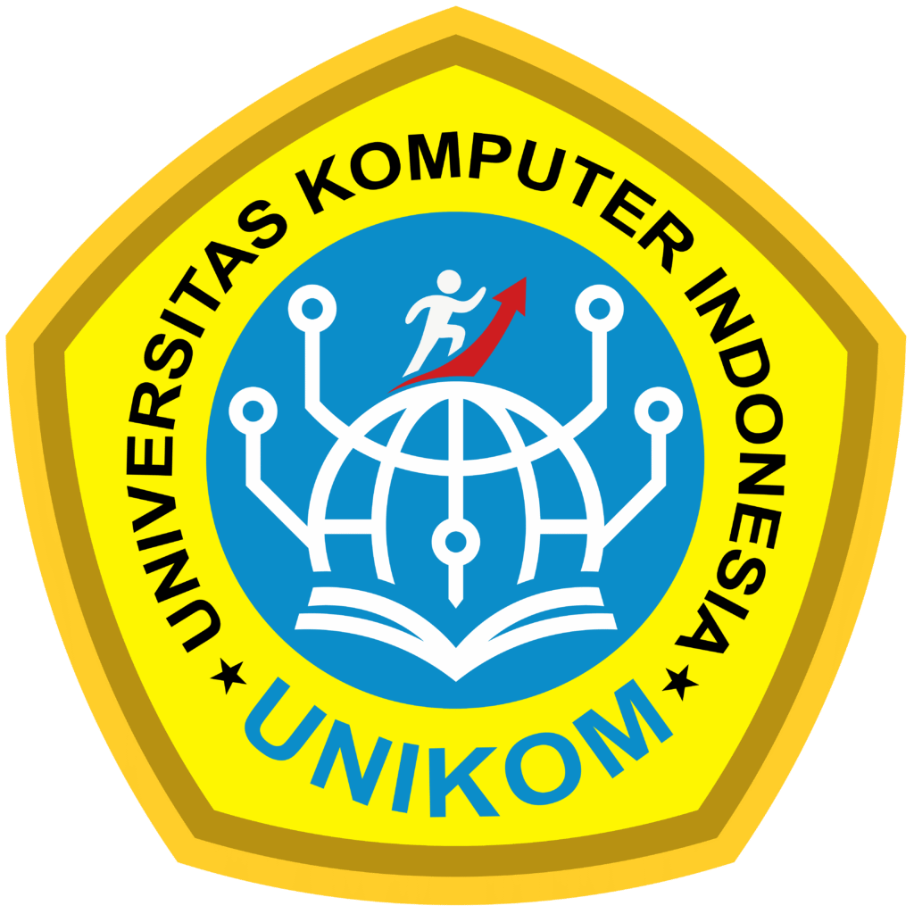

YES Goes Out
Jalan-jalan bersama sebulan sekali.

Universitas Komputer IndonesiaUKM Bahasa Universitas Komputer Indonesia
Speak Out, Connect, and Say YES!
Youth English Society (YES) adalah Unit Kegiatan Mahasiswa bahasa Inggris di Universitas Komputer Indonesia. Latihan diskusi dan public speaking dilakukan setiap minggu.
Pendaftaran anggota baru dibuka pada setiap awal semester. Informasi lengkap tersedia di sekretariat UKM.
YES berawal dari komunitas debat bahasa Inggris pada tahun 2007, dan pada tanggal 4 September 2012 resmi menjadi Unit Kegiatan Mahasiswa.
Nilai yang kami pegang adalah Pancasila, rasa kekeluargaan, dan PIQIE (Professionalism, Integrity, Quality, Information Technology, and Excellence).
Pelatihan grammar, vocabulary, dan listening untuk persiapan kompetisi debat bahasa Inggris.
Latihan menyampaikan gagasan dan berbicara di depan umum.
Anggota senior mendampingi anggota baru dalam pengelolaan acara dan organisasi.
| Hari | Kegiatan | Deskripsi | Waktu |
|---|---|---|---|
| Kamis | Forum Group Discussion (FGD) | Diskusi kelompok dengan topik yang berbeda-beda setiap minggu. | 15.30 – 17.00 WIB |
| Jumat | Public Speaking Class | Latihan pidato dan storytelling. | 15.30 – 17.00 WIB |
| Flexible Day | YES Educare | Pengajaran bahasa Inggris untuk masyarakat sekitar. Jadwal menyesuaikan. | 15.30 – 17.00 WIB |
Jalan-jalan bersama sebulan sekali.
Forum berbagi cerita dan pengalaman antar anggota.